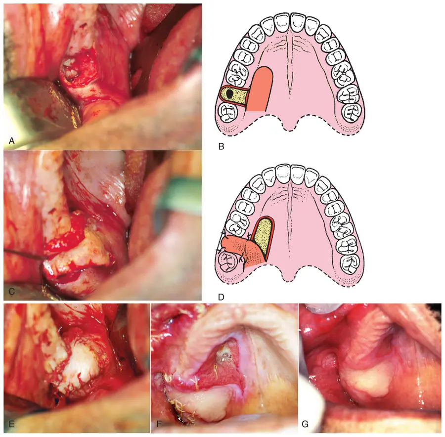
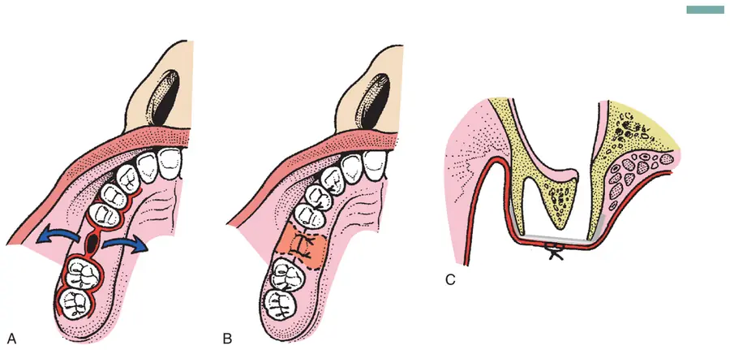

نسخه استخراجشده؛ ترجمه یا تأیید علمی انجام نشده است. وضعیت: captured
درمان و بستن موفق فیستول دهانی-سینوسی، به درمان پزشکی و جراحی گستردهتری نیاز دارد.

و یک الزام پیش از هر بستنی: پیش از بستن فیستول دهانی-سینوسی، الزامی است که هر عفونت حاد یا مزمن درون سینوس حذف شود.
و این میتواند سه اقدام بطلبد:
و یک ارزیابی که میتواند برنامه را عوض کند: دندانهای مجاور باید با دقت برای درگیری احتمالی ارزیابی شوند. و دقت کن: اگر فیستول در مجاورت ریشهی دندان مجاوری پدید آمده باشد، بستن پیچیدهتر میشود — و برای موفقیت، برداشتن آن دندان ممکن است لازم گردد.
و سه روش بستن فیستول: پیشروی فلپ باکال، پیشروی فلپ پالاتال، و پیشروی فلپهای پالاتال و فاسیال روی ممبرانی از مادهی آلوپلاستیک.
و تفاوت کلیدی فلپ باکال در فیستول مزمن با بستن فوری: عمل فلپ باکال شبیه پیشروی باکالی است که برای بستن فوری توضیح داده شد — ولی در فیستول مزمن، مجرای فیستولی با اپیتلیوم پوشیده شده که باید برداشته یا از دیوارههای استخوانی فیستول بلند شود، در صورت امکان به هم بخیه گردد، و به داخل حفرهی سینوس برگردانده شود.
و زمانبندی این کار مهم است: این باید پیش از بلند کردن فلپ باکال انجام شود — تا اندازهی واقعی نقص استخوانی بازرسی و اندازهی فلپ بهطور مناسب طراحی گردد، بهگونهای که فلپ کل نقص را با حاشیههایی که روی استخوان مینشینند بپوشاند.
سپس: فلپ بلند میشود، پریوست آزاد میگردد، و فلپ روی نقص کشیده و با دقت بخیه میشود.
و یک گونهی دیگر از همین تکنیک: فلپ باکال بزرگتری بلند میشود، ولی سپس نقص مستقیماً با استفاده از بخشی پایهدار از تودهی چربی باکال پوشانده میشود، با بستن نسبی فلپ موکوپریوستئال.
نخست، قاعدهای که کل برنامهریزی جراحی را عوض میکند:

صرفنظر از تکنیک بهکاررفته، باید به یاد داشت که نقص استخوانی پیرامون فیستول همیشه بسیار بزرگتر از تغییرشکل بافت نرمی است که بالینی آشکار است — و برنامهریزی جراحی تکنیک بستن باید بر همین اساس تنظیم شود.
یعنی: آنچه در دهان میبینی، تنها نوک ماجراست. اگر فلپ را به اندازهی سوراخ ظاهری طراحی کنی، حاشیههایش روی حفره مینشینند نه روی استخوان — و شکست میخورد.
فلپ پالاتال — دو مزیت: چرخاندن فلپ پالاتال اغلب برای بستن فیستول به کار میرود، و مزایای فلپ تمامضخامت پالاتال دو تاست:
و عیبش: ناحیهی بزرگ استخوان برهنه که از بلند کردن فلپ باقی میماند.
و الزام اندازه: اندازهی فلپ باید امکان چرخش غیرفعال (passive) آن را برای پوشاندن کل نقص فراهم کند، با حاشیههایی که فراتر از مرزهای استخوانی نقص امتداد مییابند.
و سرنوشت ناحیهی اهداکننده: پس از برداشتن فیستول و بلند کردن و چرخاندن و بخیه زدن فلپ، نقص پالاتال سرانجام با گرانولاسیون و اپیتلیالیزاسیون ثانویه ترمیم مییابد.
و یک هشدار دربارهی پوشاندن آن: در برخی موارد نقص میتواند با ابتوریتور موقت با نوعی لاینر نرمکنندهی بافت پوشانده شود — ولی مهم است که هیچ فشاری روی ناحیهی فلپ اعمال نشود، چون این میتواند خونرسانی را کم و نکروز بافت ایجاد کند.
و روش سوم — ممبران آلوپلاستیک: این تکنیک از برداشتن فیستول، بلند کردن فلپها در سمت فاسیال و پالاتال نقص، پوشاندن نقص با نوعی مادهی آلوپلاستیک، و نزدیک کردن فلپها تا حد ممکن روی آلوپلاست استفاده میکند.
و یک نکتهی پایانی: رویکردهای ترکیبی داخلدهانی و آندوسکوپیک میتوانند شانس موفقیت بلندمدت را افزایش دهند.